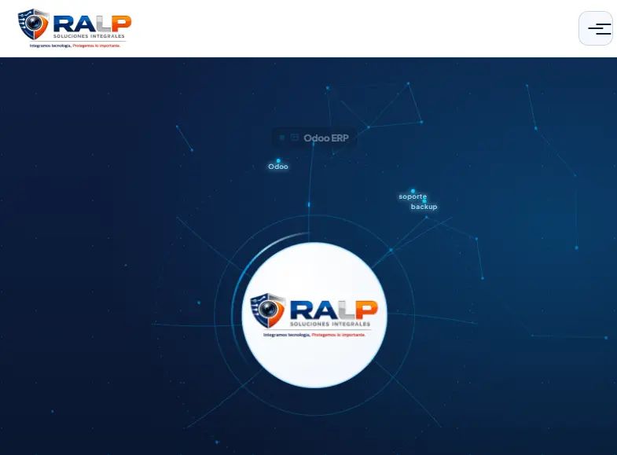
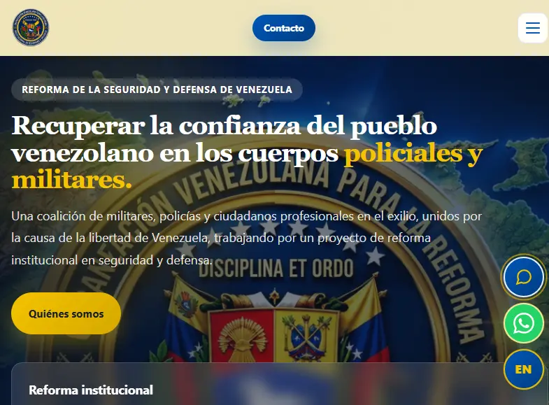

Hola, soy
Rafael Ángel Núñez García
Desarrollo Web
Construyo soluciones tecnológicas de principio a fin: desarrollos web responsivos, infraestructura de redes y sistemas de seguridad electrónica. Este portafolio es una muestra de ese trabajo.
Sobre mí
Profesional de Ingeniería de Sistemas con experiencia en infraestructura tecnológica, redes, seguridad electrónica, soporte TI y desarrollo web. Me enfoco en implementar, mantener y resolver problemas tecnológicos en entornos profesionales, integrando hardware, software e infraestructura para atender necesidades reales de negocio.
En el área web diseño y construyo sitios y aplicaciones con HTML5, CSS3 y JavaScript, además de trabajar con PHP, Python/Django y bases de datos MySQL/MariaDB. Me interesa especialmente que cada solución sea usable, rápida, accesible y fácil de mantener.
Trayectoria
Proyectos y áreas de especialidad con resultados concretos.
Proyectos destacados
Instituto Nacional de Rehabilitación “Luis Guillermo Ibarra Ibarra”
Infraestructura tecnológica hospitalaria · CDMXImplementación y modernización de videovigilancia IP, red de datos, voceo hospitalario y almacenamiento centralizado, con canalización y cableado estructurado certificado para un entorno hospitalario.
Ver caso completoGrupo Bimbo
Sistema integral de seguridad electrónica · JaliscoDiseño e instalación de videovigilancia, control de acceso, alarmas y videoportero: canalización, cableado, configuración y puesta en operación para mejorar cobertura y supervisión de áreas estratégicas.
Ver caso completoÁreas de especialidad
Ingeniería de Sistemas y Desarrollo Web
Diseño de soluciones · Soporte TI · Bases de datos · WebDesarrollo de soluciones tecnológicas, soporte de sistemas e infraestructura, con construcción de interfaces, lógica de aplicación y bases de datos para optimizar procesos operativos.
Especialista en Seguridad Electrónica
CCTV · Control de acceso · Videoporteros · AlarmasInstalación, configuración, puesta en operación y soporte de sistemas de seguridad electrónica, incluyendo videovigilancia IP y analógica, control de acceso, videoporteros y soluciones de alarma.
Infraestructura Tecnológica
Redes · Cableado estructurado · NAS · SoporteImplementación y soporte de redes, cableado estructurado, almacenamiento NAS, configuración de equipos y atención de requerimientos técnicos en entornos empresariales.
Formación
Ingeniería de Sistemas
Formación académicaFormación orientada al diseño, implementación y mantenimiento de sistemas tecnológicos: redes, sistemas, bases de datos y desarrollo de software.
Instituto Politécnico Santiago Mariño, Venezuela psm.edu.ve
Certificaciones
Formación complementariaCertificaciones y constancias de formación técnica disponibles en el repositorio público de documentos.
Ver certificadosFormación continua
Actualización permanenteMantención de conocimientos en infraestructura, videovigilancia, almacenamiento y desarrollo web, aplicando lo aprendido en proyectos reales.
Ver actividad en GitHubHabilidades
Niveles orientativos basados en experiencia práctica; la evidencia está en la sección de proyectos.
Stack técnico
Desarrollo Web
Además de la infraestructura física, diseño y construyo experiencias digitales completas: maquetación responsiva, interactividad, bases de datos y despliegue.
Este portafolio es mi demo
Cada sección que estás viendo fue construida desde cero con tecnologías web estándar, sin frameworks pesados.
- HTML5 semántico y accesible
- CSS modular con variables y modo claro/oscuro
- JavaScript vanilla: typing, scroll spy, chat y lightbox
- Diseño responsive y mobile-first
- SEO técnico: metadatos, canonical y JSON-LD
<section id="web" >
<h2>Desarrollo Web</h2>
<p>HTML5 · CSS3 · JavaScript</p>
<ul>
<li>Responsive</li>
<li>Accesible</li>
<li>Rápido</li>
</ul>
</section>Aplicaciones web desarrolladas

Sitio en vivoRALP Soluciones Integrales
Sitio web corporativo para una empresa de tecnología: infraestructura TI, redes, seguridad electrónica, desarrollo a medida e implementación de Odoo ERP, con formulario de cotización y canales de contacto directos.
Visitar sitio
Sitio en vivoOVRISD · Reforma de Seguridad y Defensa
Plataforma web institucional con misión, objetivos y valores, alianzas, comunicados, videoteca y banco de talento con más de 600 profesionales inscritos, además de registro de usuarios y sistema de comentarios.
Visitar sitioLo que puedo construir
Sitios corporativos y portafolios
Páginas rápidas, responsivas y optimizadas para buscadores, con identidad visual propia.
Aplicaciones y paneles administrativos
CRUD, autenticación, reportes y conexión con MySQL/MariaDB o Django.
Integraciones y mantenimiento
Conexión con APIs, mejoras de rendimiento, corrección de bugs y evolución de sistemas existentes.
Cómo trabajo
¿Tienes una idea en mente? Convirtámosla en una solución web.
Hablemos de tu proyectoPortafolio
Áreas de conocimiento y soluciones desarrolladas.
Sistemas CCTV
Implementación y configuración de videovigilancia IP y analógica con Hikvision, Hanwha Vision y MOBOTIX: cámaras, NVR/DVR, monitoreo y puesta en operación.
Infraestructura de Redes
Cableado estructurado, canalización, conectividad y configuración de equipos. Instalación, diagnóstico y puesta en operación de redes empresariales.
Servidores y NAS
Configuración y administración de almacenamiento NAS, principalmente QNAP, para gestión de archivos, respaldo y almacenamiento centralizado.
Desarrollo Web
Sitios y aplicaciones web con HTML5, CSS3, JavaScript, PHP, Python/Django y MySQL/MariaDB. Este portafolio es un ejemplo en vivo de mi trabajo.
Explorar desarrollo webSoporte TI
Diagnóstico y resolución de incidencias de hardware y software, mantenimiento preventivo y correctivo, y soporte a usuarios.
Seguridad Electrónica
Control de acceso, alarmas, videoporteros y sistemas integrados de videovigilancia para entornos industriales y hospitalarios.
Proyectos
Casos reales con alcance, cifras y evidencia fotográfica.
Instituto Nacional de Rehabilitación “Luis Guillermo Ibarra Ibarra”
Modernización tecnológica hospitalaria: 150 cámaras IP MOBOTIX, 45 nodos certificados, 500 bocinas de voceo y 2 servidores NAS QNAP.
Sistema Integral de Seguridad Electrónica para Grupo Bimbo
Videovigilancia, control de acceso facial y biométrico, alarmas y videoportero: 18 circuitos y 100% del sistema entregado.
Contacto
¿Necesitas desarrollar una solución web o fortalecer tu infraestructura TI? Hablemos.
rafanunezgmex@gmail.com
Teléfono / WhatsApp
+52 566 755 3924
GitHub
github.com/rafanunezg
rafa_nunezg
Currículum
Respuesta rápida: escríbeme por WhatsApp y cuéntame qué necesitas.
Enviar mensaje